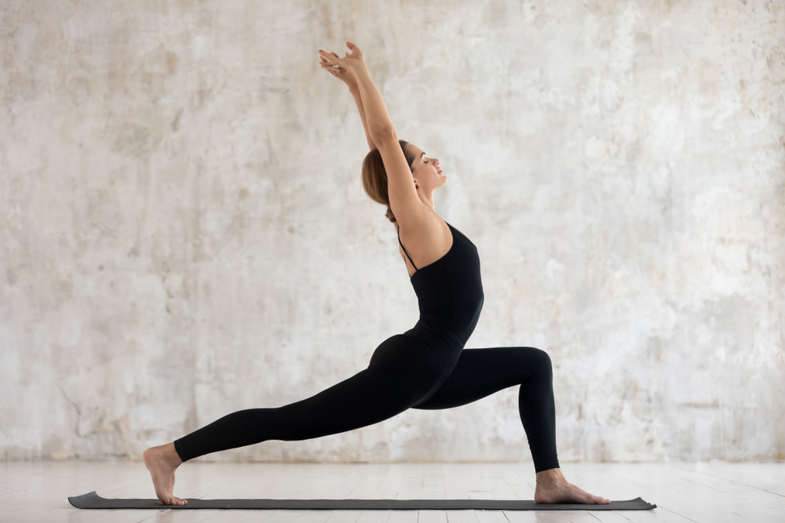

VIRABHADRASANA I
Warrior I Pose
Virabhadrasana 1 (Warrior 1 Pose), is an asana respecting the accomplishments of a fanciful warrior. Subsequently, it is additionally called the Warrior 1 posture. This asana is thought to be a standout amongst the most agile stances in yoga, and it involves a mess of excellence to the workout.

Steps of VIRABHADRASANA 1
- First stand straight and spread your legs; keep a 3 to 4 feet distance between your legs. Keep your right foot in the forward direction and keep the left foot back direction.
- With your right leg turn outwards at 90 degree and keep left leg by 15 degrees. Place your heel of the right leg is completely parallel to the midpoint of the left leg.
- Raise your arms up to the height of shoulders. Keep your arms parallel to the ground with palms facing upward.
- Breathe out and twist your right knee in a way that knee and ankle makes a parallel line. (Ensure that your knee does not go ahead in front of your ankle).
- Look to your right side.
- Now stretch your arms and join your palms above your head (Make a salutation pose or Namaskar pose with your palms above the head).
- Keep looking at your palms and slowly push down your pelvis.
- Hold the pose with the same determination as a warrior, and wear a smile on your face. Breathe normally and keep going down.
- Remain in this position for a moment; with the feeling that you are a warrior.
- Breathe normally in and come to the standing position.
- Breathe out and slowly put your hands down.
- Repeat this Asana from your left side (look at your left side), by putting your left leg in forward direction and right leg at the back. (Opposite to the earlier process).
THE BENEFITS OF VIRABHADRASANA 1
- It strengthens and tones your lower back, legs and arms, and the legs.
- It strengthens your Thighs, Ankles, Calves, Shoulders, Arms and Back.
- It stretches your Navel, Ankles, and thighs, Groin, Lungs, Thorax, Calves, Shoulders and Neck.
- It increases the stamina of the body.
- It is likewise an incredible asana for those who are in sedentary jobs.
- Useful for the digestive system and spine.
- This asana backs off solidified shoulders.
- It additionally discharges stress from the shoulders very quickly.
- It relaxes the mind and the body.
- It spreads the thought of strength, peace, elegance and a feeling of auspiciousness.
CONTRAINDICATIONS & CAUTIONS
- High blood pressure
- Heart issues
- Neck problems
WATCH OUT FOR
- Keep your feet roughly hip distance apart as if on separate train tracks in order to keep your hips facing forward. If you still feel discomfort in the lower back or pelvis region, lift your back heel up for High lunge / Crescent pose instead.
- If there are any injuries or existing weaknesses in your neck, keep your chin tucked in and your neck in the line with your spine.